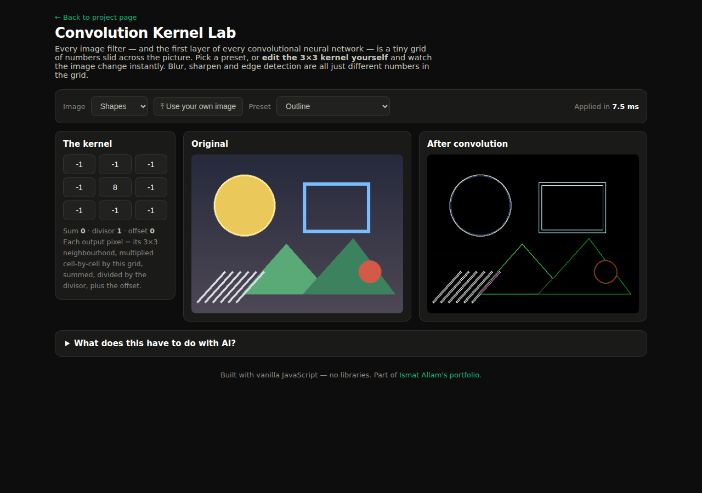

Blur, sharpen, emboss and edge detection are not separate algorithms — they are the same operation with different numbers. This lab lets you edit the numbers. It is the intuition behind a convolutional neural network's first layer, made touchable.
Convolutional neural networks are the standard tool for image recognition, and "convolution" is the step everyone learns first — a little grid of numbers slid across a picture. Yet it usually stays an equation on a slide. When I studied CNNs I realised I could not answer basic questions concretely: why does one kernel blur while another finds edges? Why do blur kernels sum to 1 and edge kernels to 0? What happens if I change one number?
The scope: build a tool where those questions answer themselves — a live convolution engine where every cell of the kernel is editable, presets show the classic filters, the result appears instantly, and it works on any image the visitor supplies (processed entirely in their browser, nothing uploaded anywhere).
Solo build, no libraries. The screen shows the 3×3 kernel as nine editable cells beside the original and filtered images. Nine presets cover the classics — box and Gaussian blur, sharpen, Laplacian edge detection, both Sobel operators, emboss and outline — and the moment you type your own number into any cell, the filter reapplies and the kernel metadata (sum, divisor, offset) updates, so the arithmetic is always in view.
The convolution itself is a hand-written loop over the canvas's raw pixel buffer: for every pixel, multiply its 3×3 neighbourhood cell-by-cell with the kernel, sum, divide, offset, clamp. Edge pixels clamp their neighbourhood, custom kernels auto-normalise by their sum so home-made blurs don't blow out the brightness, and a timer shows the real cost — a full pass over a 480-pixel-wide image runs in a few milliseconds.

The core loop came first, and slowly: my first version read pixels with a tidy helper
function and took over 100 ms per frame — far too slow for live editing. Flattening it into
a single pass over the raw ImageData array with
precomputed neighbour offsets brought it down to a few milliseconds, a 20× speed-up that was
my first real lesson in why data layout matters for performance.
The rest of the process was making the mathematics legible: showing sum, divisor and offset under the kernel so the normalisation is never hidden; auto-normalising custom kernels by their sum; giving emboss its brightness offset so negative values don't just clip to black; and choosing built-in sample images with strong geometry so Sobel's directionality is obvious. The upload path uses the FileReader API and never leaves the browser — a deliberate privacy decision that also kept the tool a static page, hostable on GitHub Pages with no backend at all.
The lab does what I built it to do: convolution stopped being a formula I had memorised and became an operation I can predict. Ask me why edge kernels sum to zero and I can show you a flat region cancelling itself out, live. The tool runs a full convolution pass in roughly 5 ms, works on visitors' own photos entirely client-side, and needs nothing installed — which also makes it the fastest possible answer to "do you actually understand what a CNN does?" in an interview: open it and edit the numbers.